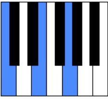
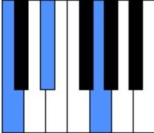

Existen varios acordes que leer en las partituras, aqui apreneremos a identificar los menores y mayores
Los acordes mayoresse cuentan con primero dos tonos seguidos,un tono y por ultimo un semitono. En resemunen primero tres teclas a la derecha y luego 3
En la imagen que se muestra, podemos ver un acorde de Do mayor. Como vemos empezamos a partir del do luego nos movemos 2 tonos a la derecha (4 teclas) y despues 1 tono y medio (2 teclas y una mas)
Los acordes menores se cuentan con primero 1 tono y medio seguidos , y luego dos tonos. En resemunen primero tres teclas a la derecha y luego 4.Basicamente es como tocar un acorde mayor pero el orden de las teclas es alreves
En la imagen que se muestra, podemos ver un acorde de Do menor. Como vemos empezamos a partir del do luego nos movemos un tono y medio a la derecha (2 teclas y una mas) y despues 2 tonos (4 teclas)
Para tocar acordes mayores y menores se debe seguir el patron de teclas mencionado anteriormente
A menudo encontraras en las partituras algunas notas acompañadasde un numero , dicho numero corresponde a un dedo, dependiendo de en que pentagrama este puede ser de la mano izquierda o derechay dependiendo de la mano, el orden ira desde el dedo pulgar siendo el primero hasta el meñique siendo el quinto